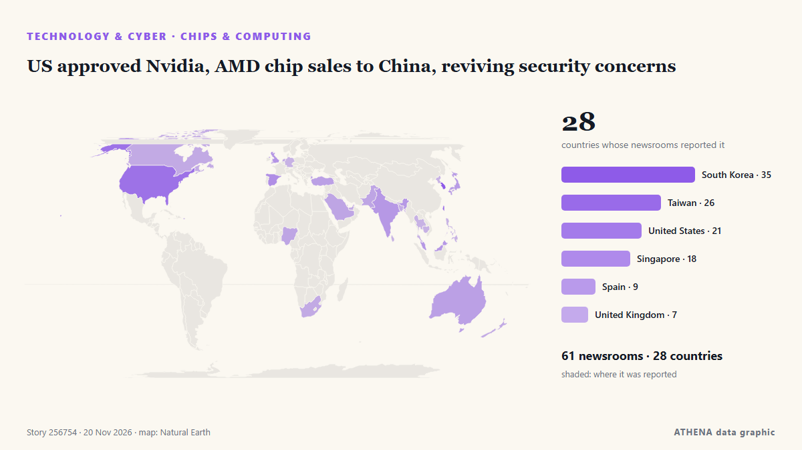

Puces et calcul
SponsoriséPrésenté par  Cybernetics and Artificial Intelligence Lab Welcome to the Cybernetics and Artificial Intelligence Laboratory, established at the Department of Business Administration of the National and Kapodistrian University of Athens. The lab is headed by Professor Dimitrios Thomakos. The lab aims to do research that can be published in top venues. Our research uses tools and methods of Artificial Intelligence, and lies in the following areas: - Forecasting - Decision making - Cyber security - Finance We are always looking forward to collaborating with exceptional students!
Cybernetics and Artificial Intelligence Lab Welcome to the Cybernetics and Artificial Intelligence Laboratory, established at the Department of Business Administration of the National and Kapodistrian University of Athens. The lab is headed by Professor Dimitrios Thomakos. The lab aims to do research that can be published in top venues. Our research uses tools and methods of Artificial Intelligence, and lies in the following areas: - Forecasting - Decision making - Cyber security - Finance We are always looking forward to collaborating with exceptional students!
| 7 nov. | 0 |
|---|---|
| 8 nov. | 0 |
| 9 nov. | 1 |
| 10 nov. | 0 |
| 11 nov. | 0 |
| 12 nov. | 0 |
| 13 nov. | 0 |
| 14 nov. | 0 |
| 15 nov. | 2 |
| 16 nov. | 3 |
| 17 nov. | 2 |
| 18 nov. | 3 |
| 19 nov. | 2 |
| 20 nov. | 1 |
Les titres sont affichés en anglais, tels que publiés.

US approved Nvidia, AMD chip sales to China, reviving security concerns
The weakness came amid a wider sell-off in regional equity markets, with Japan’s Nikkei 225 down 2% and South Korea’s Kospi losing 2.6%. de Cointelegraph
Miti, Customs investigate allegation AI chips re-exported through Malaysia
KUALA LUMPUR: The Investment, Trade and Industry Ministry (MITI) will collaborate with the Customs Department and relevant enforcement agencies to determine whether any chips brought into Malaysia… de New Straits Times
Supermicro sued by shareholders over claims Nvidia executive’s wife knew about illicit China sales
A civil lawsuit claimed that there was "no way Cenly Chen lacked knowledge about the company's illicit sales." de Tom's Hardware
Q.ANT unveils NPU Gen 2+ photonic processor
Company said NPU will work as co-processor alongside GPUs and CPUs to address compute bottlenecks. de Data Center Dynamics
Singapore invites US to inspect use of advanced AI chips
MANILA: Singapore is ready to facilitate US government inspections of AI chip use in the city-state, Prime Minister Lawrence Wong said, responding to concerns over alleged abuse of advanced tech in… de New Straits Times
China warns US of retaliation over new AI chip restrictions
The restrictions threaten to overshadow Xi’s meeting with Donald Trump this week. de The Business Times
Samsung Electro-Mechanics expands substrate, MLCC supply to Nvidia
Samsung Electro-Mechanics has revised its existing supply agreement with Nvidia to expand supplies of advanced semiconductor package substrates and multilayer ceramic capacitors (MLCCs) for the U.S.… de The Korea Times
Japan takes Fugaku supercomputer offlline after cyberattack
The Fugaku supercomputer operated by Japan's RIKEN Center for Computational Science has been taken offline following a security breach. de BleepingComputer
US Tightens Global AI Chip Controls
US expands chip controls to five countries to restrict China's access to advanced AI computing. de News of Bahrain